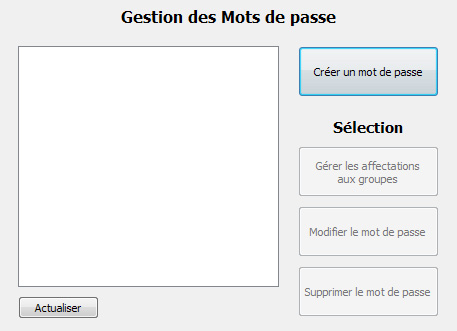
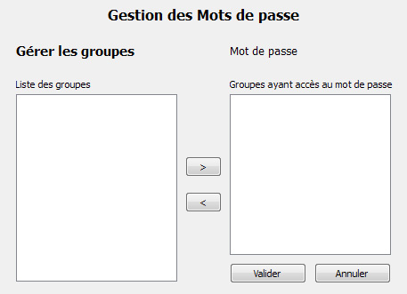
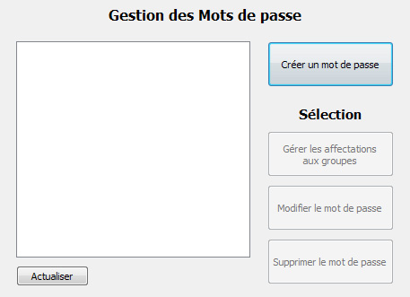
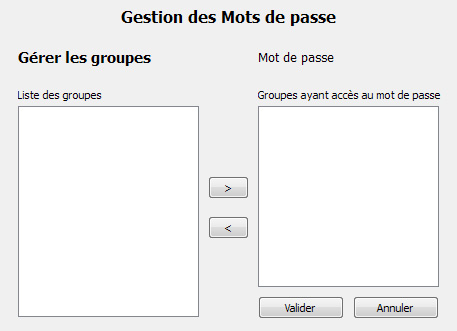

Documentation client
Administration : mots de passe
L'interface de gestion des mots de passe permet aux administrateurs de créer, modifier et supprimer des mots de passe ainsi que de choisir les groupes auxquels un mot de passe est associé.

Les boutons de modification, suppression et gestion des groupes d'un mot de passe s'activent lors de la sélection d'un mot de passe dans la liste.
Lors de la modification d'un mot de passe sélectionné dans la liste, le nom, identifiant, mot de passe et serveur actuels sont renseignés et peuvent être modifiés.
Les interfaces de création et de modification d'un mot de passe sont identiques.

L'interface présente la liste des groupes du système à gauche, et la liste des groupes du mot de passe à droite. Un groupe apparaissant dans la liste de droite n'apparait pas dans la liste de gauche.
Le bouton ">" permet d'ajouter le groupe sélectionné dans la liste de gauche aux groupes du mot de passe.
Le bouton "<" permet d'enlever le groupe sélectionné dans la liste de droite des groupes du mot de passe.


Les boutons de modification, suppression et gestion des groupes d'un mot de passe s'activent lors de la sélection d'un mot de passe dans la liste.
Créer ou modifier un mot de passe
Lors de la création d'un mot de passe, le nom, identifiant, mot de passe et serveur sont demandés.Lors de la modification d'un mot de passe sélectionné dans la liste, le nom, identifiant, mot de passe et serveur actuels sont renseignés et peuvent être modifiés.
Les interfaces de création et de modification d'un mot de passe sont identiques.
Supprimer un mot de passe
Lors de la suppression d'un mot de passe sélectionné dans la liste, ses informations sont supprimées de la base de données ainsi que ses liaisons éventuelles avec des groupes.Gérer les groupes d'un mot de passe
La gestion des groupes du mot de passe sélectionné permet de choisir à quels groupes le mot de passe est associé, et donc quels groupes auront accès au mot de pase.L'interface présente la liste des groupes du système à gauche, et la liste des groupes du mot de passe à droite. Un groupe apparaissant dans la liste de droite n'apparait pas dans la liste de gauche.
Le bouton ">" permet d'ajouter le groupe sélectionné dans la liste de gauche aux groupes du mot de passe.
Le bouton "<" permet d'enlever le groupe sélectionné dans la liste de droite des groupes du mot de passe.
